코딩을 처음 시작하는 학생
코딩이 처음이라 무엇부터 해야 할지 막막한 학생
코딩을 처음 시작해도 괜찮습니다. 방학에는 기초와 실습을, 학기 중에는 학교 내신을 수준에 맞춰 1:1로 차근차근 준비합니다.
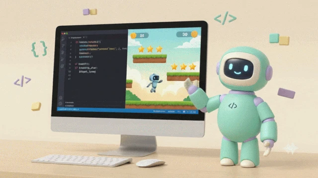
녹화 강의를 보는 방식이 아니라, 선생님과 같은 시간에 화면으로 만나 질문하고 답하며 진행합니다.
정해진 시간에 선생님과 화면으로 만나 1:1로 수업합니다.
코드가 막히는 순간 바로 묻고, 원인을 함께 찾아 해결합니다.
수업 녹화 기능을 활용해 수업 후 다시 보며 복습할 수 있습니다.
코딩 온라인과외는 방문수업 없이 실시간 1:1 화상수업으로 진행합니다. 정해진 시간에 선생님과 만나 설명을 듣고, 직접 코드를 작성·실행해 결과를 확인하며 막히는 부분은 바로 질문합니다.
파이썬 온라인수업과 자바 수업 모두 같은 방식이며, 무료 체험수업으로 수업 방식을 먼저 확인할 수 있습니다.
만들고 싶은 것을 작은 단계로 나누고, 명령을 작성해 실행한 뒤 결과를 확인합니다. 예상과 다르게 작동하면 원인을 찾아 수정하는 과정을 연습합니다.

해야 할 일을 작은 단계로 나누고 실행 순서를 정합니다.
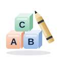
같은 작업은 반복으로 묶고, 상황에 따라 다른 명령을 실행하도록 구성합니다.

아이디어를 프로그램으로 표현하고 실행 결과를 보며 고칩니다.
학생부터 직장인까지, 코딩을 배우고 싶은 이유는 달라도 시작은 현재 수준을 아는 것부터입니다.
코딩이 처음이라 무엇부터 해야 할지 막막한 학생
학교 수업 진도를 따라가기 어렵거나 내신 준비가 필요한 학생
배운 내용을 활용해 직접 동작하는 프로그램을 만들어보고 싶은 학생
순서와 조건을 정리하며 문제를 풀어가는 힘을 기르고 싶은 학생
코딩 경험은 조금 있지만, 자바·파이썬 같은 텍스트 코딩을 제대로 시작하고 싶은 학생
작은 아이디어라도 처음부터 끝까지 직접 완성해보고 싶은 학생
코딩을 배우려는 목적과 지금까지의 경험을 먼저 확인합니다. 자바·파이썬 기초, 학교 정보 수업 준비, 방학 학습 등 필요한 방향을 상담하고 현재 수준에 맞춰 시작합니다.
현재 수준과 학습 목표에 맞춰 아래 분야 중 필요한 부분을 중심으로 수업합니다.
자바 문법과 기본 구조를 익히고 직접 코드를 작성해 봅니다.
파이썬으로 기초 개념을 익히고 간단한 문제를 해결해 봅니다.
변수, 조건, 반복 등 프로그래밍의 기본 개념을 이해합니다.
큰 문제를 작은 단계로 나누고 막힌 부분의 원인을 찾아 해결합니다.
학교 학습과 코딩 관련 내신 범위에 맞춰 준비합니다.
방학 동안 기본 개념과 실습을 집중적으로 익혀 학기 중 수업에 대비합니다.
자바를 처음 배운다면 변수·조건·반복 같은 기본 개념을 짧은 코드로 작성하고 실행하며 익힙니다. 배운 경험이 있다면 이해하기 어려웠던 문법과 오류 메시지, 직접 작성한 코드를 확인해 시작점을 정합니다. 실행 결과가 예상과 다를 때는 코드의 흐름을 따라가며 원인을 찾고 수정하는 연습을 합니다.

직접 작성한 코드를 실행해 보고, 결과가 왜 그렇게 나왔는지 선생님과 함께 짚어 봅니다.
사용해 본 도구와 코딩 경험을 확인하고, 명령의 순서·조건·반복을 이해하는 활동부터 학습 방향을 정합니다.
실제 학교 정보 수업의 언어·교재·배우는 단원을 확인하고, 개념 이해와 직접 작성하는 연습을 연결합니다.
학교 수업 범위와 현재 프로그래밍 경험을 확인하고, 필요한 언어·개념·문제 풀이 수준에 맞춰 수업 범위를 상담합니다.
학교마다 교육과정 편성과 사용하는 도구·언어가 다르므로 실제 교재와 수업 자료를 확인해 안내합니다.
코딩을 처음 배우는 성인부터 자바·파이썬 기초를 다시 정리하려는 직장인까지, 현재 경험과 배우려는 목적을 확인해 학습 범위를 상담합니다. 실시간 1:1 온라인수업에서 직접 코드를 작성하고 실행하며, 막히는 부분을 질문할 수 있습니다.
상담 준비 사용해 본 언어·배우려는 목적·어려운 부분·수업 가능한 요일과 시간을 알려 주세요. 희망 시간에 따른 선생님 일정을 확인해 안내합니다.
같은 언어를 배워도 수준에 따라 수업 내용과 속도가 달라집니다. 확인한 경험과 목표에 맞춰 아래 단계 중 시작점을 정합니다.
캐릭터의 움직임과 게임 속 상황을 명령으로 구성하며 프로그래밍 개념을 익히는 과정입니다. 현재 경험과 목표를 상담해 시작 단계와 수강 범위를 안내합니다.
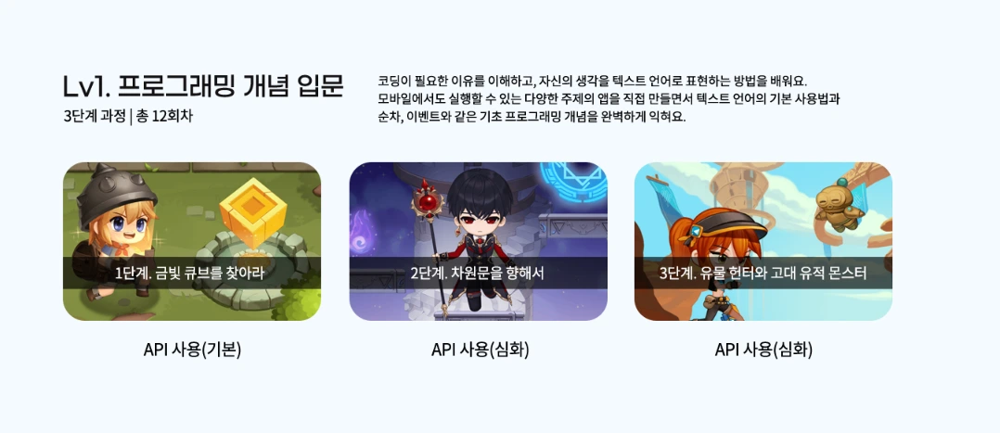
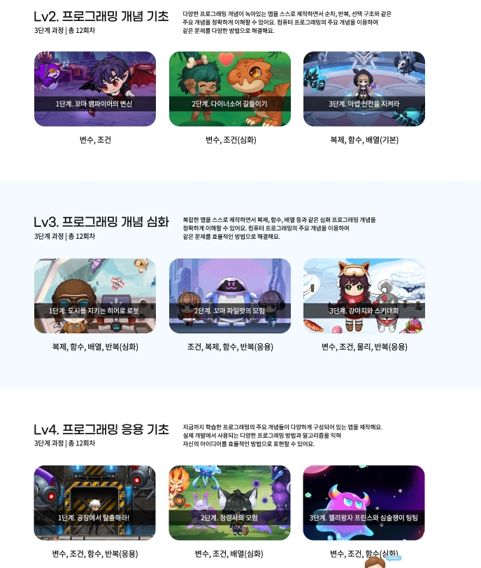
이미지의 단계·회차는 커리큘럼 구성 안내입니다. 실제 수강 범위와 진도·일정, 해당 구성의 비용은 상담에서 확인해 주세요.
파이썬 데이터사이언스 과정 커리큘럼의 주요 학습 내용을 소개합니다. 자바 수업은 위 수업 분야와 같이 수준에 맞춰 진행하며, 실제 시작 단계와 수강 범위·진도·일정은 상담 후 안내합니다.
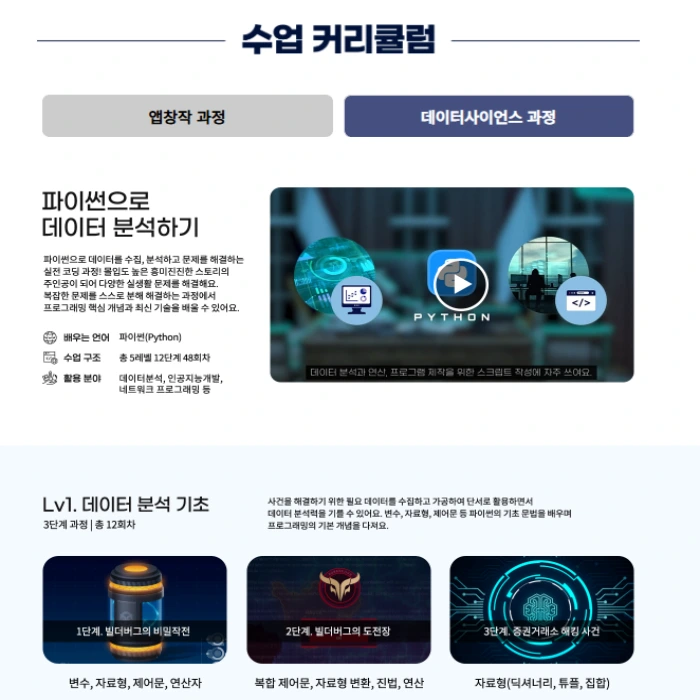
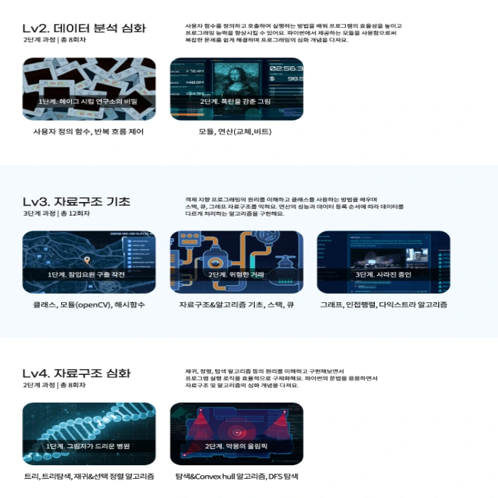
이미지의 단계·회차는 커리큘럼 구성 안내입니다. 실제 수강 범위와 진도·일정, 해당 구성의 비용은 상담에서 확인해 주세요.
앱·게임 과정과 파이썬 과정 모두, 작은 프로그램을 직접 만들어 보며 아래 흐름으로 배웁니다.
수준에 맞는 주제를 정하고 무엇을 만들지 함께 그려 봅니다.
필요한 기능을 작은 단계로 나누어 순서를 정합니다.
선생님과 화면을 함께 보며 직접 코드를 작성합니다.
막힌 부분의 원인을 찾아 스스로 고쳐 보는 연습을 합니다.
완성한 결과를 함께 점검하고 다음 학습 방향을 정합니다.

만들고 싶은 기능을 종이에 정리한 뒤, 순서대로 코드로 옮기며 프로그램을 완성해 갑니다.
학생의 수준과 목표, 희망 일정을 고려해 맞는 선생님을 안내합니다.
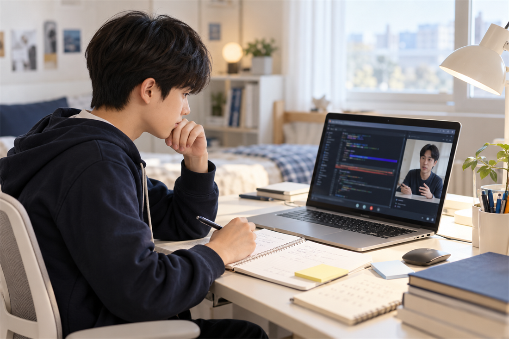
막힌 부분은 정답을 바로 알려주기보다, 원인을 함께 찾고 스스로 고쳐 보도록 이끕니다.
선생님 배정 기준과 절차는 상담 시 학생의 수준과 목표를 확인한 뒤 안내드립니다.
방학 동안 코딩의 기본 개념과 실습을 집중적으로 익히고, 학기 중에는 학교 정보·프로그래밍 수업에서 배우는 내용을 이해하는 데 연결합니다. 학교에서 코딩을 배우는 학생이라면 시험 직전에만 준비하기보다 기초부터 꾸준히 익히는 것이 중요합니다.
학교·학년별 교육과정과 평가 범위가 다르므로 실제 수업 계획은 상담에서 확인합니다.
PC 또는 노트북과 안정적인 인터넷, 카메라·마이크 환경에서 진행합니다. 과정별 필요한 프로그램과 설치 방법은 상담에서 안내합니다
월 300,000원
주 2회 · 1회 60분 · 한 달 기준
실제 수업 시간과 과정은 상담 후 정하며, 구성 변경에 따른 최종 비용은 상담에서 안내합니다.
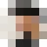
초등학생 수강생
수업을 하기 전에는 영어도, 컴퓨터도 전혀 못 했었는데요. 이제는 제가 생각하는 아이디어로 명령문을 바꿔서 원하는 게임을 만들 수 있게 되었어요.
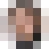
초등학생 학부모
텍스트 코딩이 처음이어서 어려워하지 않을까 걱정했는데 전문코치님이 친절하고 쉽게 설명해 주셔서 게임의 원리와 과정을 알아가는 재미에 빠졌어요!
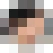
중학생 수강생
영어 실력도 많이 는 것 같고 코딩 실력도 느는 것 같고, 점점 더 똑똑해지는 느낌입니다.
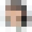
중학생 수강생
마음대로 그리고 붙여서 스프라이트를 추가하고 실행하는 게 재밌습니다! 실험해 보니까 진짜로 내가 생각하는 게 나와서 신기해요!
학년과 과정명은 후기 작성 당시 기준이며, 학습 경험과 변화는 개인마다 다를 수 있습니다.
무료 체험수업으로 현재 수준과 수업 방식을 먼저 확인해 보세요. 희망 과정과 일정에 맞춰 진행 방법을 안내합니다.
상담 신청만으로 등록이나 선생님 배정이 확정되지는 않습니다.
코딩 무료 체험수업 상담 신청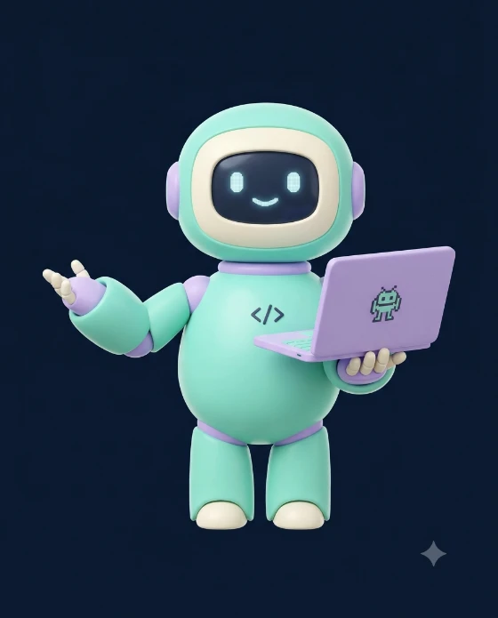
코딩 수업은 지역과 관계없이 실시간 1:1 화상으로 진행합니다. 부산에서 코딩과외를 찾고 있다면 부산 전체 안내에서 구·군별 학습 안내와 상담 준비사항을 확인해 보세요.
부산 코딩과외 안내